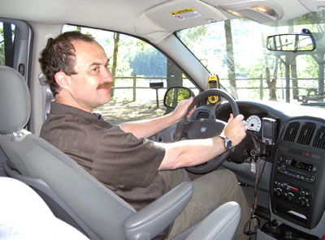
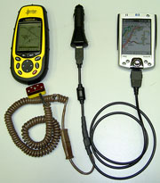

С «Дестинатором 3» по Северной Америке.
Мои впечатления о программе.
28 октября 2004 г.
В сентябре 2004 года я, наконец, решился на большое автомобильное путешествие по США и Канаде. Одним из основных факторов, повлиявших на это решение, явился выход в свет новой, работоспособной версии навигационной программы - «Дестинатор 3» с картами Северной Америки (США и Канады). До этого я опасался водить машину в незнакомой стране, особенно по крупным городам с интенсивным движением, поскольку наличие даже подробной бумажной карты создает массу общеизвестных проблем.
По возвращении из путешествия, где я интенсивно пользовался «Дестинатором 3», мне пришлось ни один десяток раз рассказывать о своих впечатлениях о программе своим друзьям и единомышленникам, отвечать на кучу одинаковых вопросов, пока мне это не надоело и я решил изложить все на бумаге. Электронной, конечно. Возможно, это пригодится кому-нибудь еще.
Для тех, кто не в курсе дела – «Дестинатор 3» (в дальнейшем - просто «Дестинатор») это 3-я версия компьютерной программы предназначенной для карманного компьютера Pocket PC. Программа способна проложить на экране компьютера автомобильный маршрут на любой адрес или объект и провести вас к нему в режиме реального времени.
Предвидя ваш вопрос, сообщаю, что программу я, разумеется, купил. На www.ebay.com при некоторой сноровке можно приобрести ее американо-канадскую версию за относительно небольшую цену, примерно равную стоимости двух ночей в средней американской гостинице.
Прошу также учесть, что здесь изложены мои личные впечатления от эксплуатации программы, и они отнюдь не являются руководством к действию . Поэтому, никакой ответственности за использование этой статьи в целом или отдельных ее частей я не несу.
При перепечатке прошу ссылаться на автора и источник информации.
Полагаю, что большинство достоинств и недостатков североамериканской версии «Дестинатора» справедливы и для версий программ, содержащих карты других государств.
2. «Железо».
Мое «железо» состояло из:
 КПК - iPAQ HP 2210 с двумя карточками памяти - SD и CF , по 512 Мб.
КПК - iPAQ HP 2210 с двумя карточками памяти - SD и CF , по 512 Мб.
Обратите внимание, что дорожные карты «Дестинатора» требуют большого объема карточек памяти. Карты, включающие Западное побережье США (штаты Калифорния и Невада), Восточное побережье США (штаты Нью-Йорк, Коннектикут, Массачусетс) и Восточное побережье Канады (провинции Онтарио и Квебек) "завесили" у меня примерно на 700Мб. Хотя, если «поджаться», можно было обойтись и одной 512 мегабайтной карточкой и даже еще меньшей. Но при этом вместо каждой карты, охватывающей сразу несколько штатов, получилось бы множество карт, «нарезанных» точно по маршруту следования и переключаться между ними приходилось бы часто, что очень неудобно.
Я также предварительно заменил английские звуковые файлы ивритскими, ставшими уже более привычными моему уху. Делается это очень просто - заменой оригинальных, английских в директории «All» «Дестинатора». В принципе, возможно установить звуковые файлы любого языка, взяв их в соответствующих языковых версиях «Дестинатора». Можно также озвучить файлы самостоятельно, записав их под именами, соответствующими оригинальным.
 GPS - Магеллана серии «Meridian GPS»
GPS - Магеллана серии «Meridian GPS»
 Самодельного кабеля связывающего вышеуказанные устройства по сигналу и подающего на них соответствующие напряжения питания от бортовой сети автомобиля.
Самодельного кабеля связывающего вышеуказанные устройства по сигналу и подающего на них соответствующие напряжения питания от бортовой сети автомобиля.
 2-х кронштейнов - для крепления КПК и GPS к лобовому стеклу автомобиля.
2-х кронштейнов - для крепления КПК и GPS к лобовому стеклу автомобиля.
3. Достоинства и недостатки программы (как это видится мне).
3.1. Достоинства:
«Дестинатор» делает путешествие очень комфортным, а на подъездах к городам и в городских условиях он просто незаменим. Особенно, если город огромный и незнакомый, а движение интенсивное. Ведь практически невозможно, ни на секунду остановиться, без риска нарваться на неприятности, для того, чтобы спросить направление, посмотреть названия улиц и свериться с картой. Именно в этих случаях я не вижу никакой альтернативы «Дестинатору».
Особенно я был горд его поведением на подъездах к Нью-Йорку и в самом городе. Там мы, пользуясь исключительно командами программы, при очень интенсивном движении транспорта, очень запутанной и разветвленной сетью скоростных подъездных дорог, при несоблюдении практически никем, даже элементарных правил движения, уже в сумерках без особого труда и нервов прибыли на нужный нам адрес моих друзей в Бруклине, на забытую богом улицу. Обнаглев окончательно от такого успеха, я даже не удосужился выйти из машины, чтобы поискать нужный мне номер дома, просто остановившись по команде «Дестинатора», позвонил друзьям с сотового телефона и через минуту они, вышли встречать нас именно из ближайшего подъезда. Я не представляю, как бы мы в таких условиях доехали туда, пользуясь обычной картой. Думаю, что это была бы попытка, граничащая с самоубийством. Тот, кто заезжал в этот город в качестве туриста меня поймет.
В «Дестинаторе» имеется очень подробная информационная база данных - POI («point of information») по США и Канаде. В ней указаны точные координаты, названия и адреса с телефонами практически всех заправочных станций, парков, мест отдыха, туристических достопримечательностей, гостиниц, мотелей, продуктовых и промтоварных магазинов, аптек, ресторанов (даже по видам кухни) и многого-многого другого. А в крупных городах даже обозначены станции метро.
Очень полезна информация (и мы часто пользовались именно ей) о местах отдыха («rest area») по пути следования и времени движения к ним. Там имеются туалеты, столики, вода и даже автоматы с холодными и горячими напитками, включая кофе. Просто сказка! Особенно когда голодный, а еда (чуть не сказал «закуска») глубоко в багажнике и\или нужно в..., ну вы сами понимаете куда. А остановки и на обочинах трасс и съезд с них запрещены и строго караются.
А еще, пользуясь POI «Дестинатора» и выбрав по журналам отели предлагающие скидки (об этом смотри ниже*), мы давали навигацию прямо на один них. Причем, если адрес мотеля был не указан (такое тоже было, вместо адреса - описание как к нему проехать), он все равно легко находился по названию в базе данных «Дестинатора». На этом все проблемы заканчивались, и мы прибывали к нужному мотелю и в нужное время.
Очень удобно имеющееся в «Дестинаторе» голосовое предупреждение о превышении скорости. Спасало не раз, хотя и не всегда скорость, указанная на дорожных знаках совпадала с мнением программы. Машины там мощные, иногда невольно увлекаешься, а штрафы в Америке и Канаде за превышение скорости, ой как высоки... Впрочем, если вам попадется машина с «круиз контролем» (устройством автоматического поддержания заданной скорости), то предупреждение программы о превышении скорости можно отключить.
3.2. Недостатки:
Во многих случаях «Дестинатор» самостоятельно прокладывал маршрут, являющийся, по моему мнению, оптимальным, но это происходило далеко не всегда. И если при езде в самом городе можно было слепо доверяться «Дестинатору», который, пусть и не самым оптимальным путем, с потерей десятка-другого минут, но, в конце концов, практически гарантированно приводил в нужное место, то на перегонах между городами необходимо было заранее тщательно просмотреть и (при необходимости) откорректировать маршрут. Поскольку разница по времени между оптимальной и предложенной программой маршрутами могла доходить до нескольких часов.
Например, переезд от Ниагарских водопадов до Нью-Йорка по скоростному шоссе обычно занимает около 8 часов, а предложенный программой маршрут занял у нас около 12. При этом «Дестинатор» без малейших угрызений совести провел нас по второстепенным и третьестепенным дорогам через всевозможные деревни и поселки, только местами выводя на скоростные трассы. Однако в данном случае, мы сознательно решили полностью положиться на него, для того, чтобы посмотреть Американскую глубинку, благо время у нас было, а бензин относительно дешев. Как оказалось позже был в этом еще один положительный момент - уже при приближении к Нью-Йорку я обнаружил, что ни разу не заплатил за проезд. То бишь, объехал стороной все платные дороги, которых в Штатах не меряно, поскольку там за все любят брать денежки. Сначала я решил, что в «Дестинаторе» имеется опция, запрещающая движение по платным дорогам, но ничего такого не обнаружил. Случайность?
Но тем, кто торопится, следует поступить следующим образом в этих случаях - заранее найти «вручную» скоростную кратчайшую трассу, выбрать на ней несколько последовательных точек по маршруту движения и задать навигацию на первую из них. Затем, при приближении к первой точке, задать навигацию на вторую, третью и т.д. до конечного объекта. (Кажется, в «Дестинаторе» предусмотрена автоматическая смена заранее заданных точек, но я этим так и не воспользовался, руки так и не дошли разобраться.)
Но даже и задание программе фиксированных точек не всегда спасает. Вот пример. Мы захотели проехаться по красивейшему Тихоокеанскому побережью вдоль Калифорнии, а не по параллельной ему скоростной трассе. Но «Дестинатор» предлагал нам скоростное шоссе, которое в данном случае не представляло для нас ни малейшего интереса. Тогда я, руководствуясь описанным выше и в обход пожеланиям программы, последовательно задал несколько точек в желательном направлении. Однако это не помогло – при езде «Дестинатор» при каждом удобном для него случае, норовил насильно нас свернуть с прибрежной трассы на скоростную, а затем при приближении к заданной точке вернуть на прибрежную. Видимо, в данном случае у него работал чисто Американский инстинкт – время-деньги. Ну, как было объяснить глупой машине, что существует еще и духовная пища? Пришлось выключить звук компьютера и пользоваться дорожными знаками, периодически проверяя по «Дестинатору» лишь оставшееся расстояние до нужного нам отеля, чтобы вовремя свернуть к нему. Хотя, нужно отдать должное «Дестинатору» - скоростная трасса являлась в данном случае и наискорейшей и программа, как ей и положено, тупо выполняла свою работу.
Иногда поведение программы не лезло ни в какие ворота. При перегоне из Квебека в Торонто «Дестинатор» упорно пытался завернуть нас ...обратно, причем на многие километры назад, к определенному им ранее перекрестку, требуя, чтобы мы именно оттуда выехали на параллельную скоростную трассу, ведущую ...в тот же Торонто. Для этого не было ни малейших оснований - наша трасса (как выяснилось потом) была немного короче, такая же скоростная, широкая, ровная, машин было относительно немного. И дорожные указатели на ней и мой GPS говорили, что мы на верном пути. Однако «Дестинатор» при любом попадавшемся ему по дороге съезде упорно требовал немедленно развернуться и ехать обратно. Разумеется, при этом и указатель оставшегося пути в программе справедливо указывал, что расстояние до Торонто ...увеличивается. И такое хулиганство продолжалось несколько сот километров, до тех пор, пока я на не сообразил отменить навигацию и задать ее повторно. После этого «Дестинатор» стал вести себя вполне прилично и не уже выдвигал глупых требований.
И еще. Довольно часто при движении по многополосной трассе «Дестинатор», вдруг, без видимых (как мне вначале казалось) причин начинал пересчитывать маршрут. Это мне доставило немало неприятных минут, но затем, я обратил внимание, что такое происходит в моменты разветвлений полос трассы или съездов с нее. И все стало понятно – «Дестинатор» не виноват, проблема была связана исключительно с погрешностью в определении координат самим GPS-ом. Ведь расстояния между разветвляющимися полосами вначале составляла всего несколько метров, и как раз в этот момент «Дестинатор» ошибочно считал, что мы едем по соседней полосе уходящей в другом направлении или съезжаем с трассы. Разумеется, он как ему и положено, тут же пересчитывал маршрут. Потом, однако, по мере отдаления полос друг от друга, «Дестинатор» быстро обнаруживал правильное местонахождение и возвращал все на круги своя.
4. Советы:
При навигации между США и Канадой у нас возникла следующая проблема. Дело в том, что в «Дестинаторе» нет общей карты обоих государств и поэтому, находясь, в США невозможно дать навигацию на объект в Канаде и наоборот. Мне приходилось дважды переезжать границу, и я выходил из положения следующим образом – сначала пользуясь картой «Дестинатора», выбирал «вручную» кратчайшую скоростную трассу, затем, максимально увеличив масштаб карты, задавал навигацию точно на точку пересечения ее с границей. Прибыв в нужное место на границе, я просто менял карту государства и затем давал навигацию уже на конечный объект. Все прекрасно работало, пограничная точка "захватывалась" обеими картами без проблем.
Готовясь в путешествие, я решил полностью довериться программе и «железу», и не взял с собой атлас автомобильных дорог. Слава богу, все прошло нормально, но от одной мысли, что что-то откажет, мне становилось не по себе.
Обычным бумажным атласом автомобильных дорог я настоятельно советую запастись. Так, на всякий пожарный.
А еще на случай отказа Дестинатора или компьютера, я подстраховался и загрузил в свой GPS карты нужных мне регионов.
Перед поездкой обязательно проверьте, ловит ли спутники «Дестинатор», подключенный к GPS. Для этого в «Дестинаторе» имеется специальная функция - «Find GPS». Если «Дестинатор» не находит спутники, примите необходимые меры заранее, согласовав устройства, на месте это будет сделать гораздо проблематичнее.
Заранее проверьте на каждой карте способность программы прокладывать маршруты. Желательно это сделать между запланированными вами в путешествии объектами. У меня при такой проверке карта штата Нью-Йорк при определении маршрута навигации выдавала ошибку, до тех пор, пока я не стер ее и ни загрузил снова с диска, пользуясь настольным компьютером. Слава богу, что я обнаружил это дома.
Перелетев на другую половину земного шара, не забудьте при первом включении инициализировать GPS. Как это сделать посмотрите в инструкции производителя и потренируйтесь заранее дома. Иначе, в лучшем случае, поиск спутников займет очень много времени, а в худшем GPS не найдет их вообще. У меня первая инициализация заняла около 5 минут, и то я уже начинал изрядно нервничать, поскольку от этой «мелочи» зависела вся дальнейшая судьба моего путешествия.
Пользуясь GPS-ом любой модели в связке с КПК, не следует переключать экран на режим карты, так как это приводит к сильной задержке при передаче координат на компьютер. Связано это с тем, что на экране GPS, обладающего скромными вычислительными возможностями, ежесекундно меняется огромное количество информации, и он просто не успевает ее перерабатывать в реальном режиме времени.
При работе с любым другим экраном задержка практически отсутствует.
Отправляясь в путешествие, я опасался, что в крупных городах среди небоскребов, в национальных парках среди гор и зарослей деревьев мой GPS будет постоянно терять спутники. Мне даже в страшном сне не хотелось думать, как я буду выходить из этого положения. Но были небоскребы, были деревья и, к счастью, мой любимый «Меридиан», поправ все законы физики, прекрасно держал дорогу. "Умирал" он только в тоннелях, но при выезде из них буквально через пару секунд восстанавливал работоспособность.
Но все-таки в приборах имеющих возможность подключения дополнительной внешней антенны советую ее подключать, так как желательно, чтобы чувствительность GPS была бы максимально возможной.
Я пытался пользоваться «Дестинатором» и при прогулках пешком. Иногда полезно, но чаще неудобно. Программа рассчитана на автомобильные маршруты, которые, как правило, не совпадают с пешими. Мне кажется, что для этих целей больше подошла бы программа «Tom - Tom CityMap», в ней имеется опция пешей навигации, хотя база данных там несравненно скромнее.
Иногда имеет смысл, не пользуясь навигацией, а только картой и POI Дестинатора» посмотреть, где поблизости расположено метро, аттракция и т.д.
При прогулках пешком возникает еще одна проблема – находясь непосредственно под высокими зданиями, в сочетаниями с деревьями вдоль тротуаров (а не в середине проезжей части, как при езде на автомобиле) GPS время от времени все-таки теряет спутники.
*В заключение небольшой совет не связанный непосредственно с программой. В любом придорожном «Макдональсе», «Бургеркинге» и других забегаловках типа «dunk food» всегда имеются в достаточном количестве бесплатные журналы с «купонами» - талонами на скидки на указанные в них мотели. Все это разбито по штатам и районам, дан адрес, что очень удобно. На эти мотели мы и в основном ориентировались, разумеется, с помощью «Дестинатора». И только в одном мотеле нам сказали, что "места с купонами вот только-только закончились, а имеются обычные, а они на 20 долларов дороже". И это притом, что у этого многоместного мотеля были припаркорваны аж целых ...2 машины. Не беда - в километре мы без труда нашли другой мотель. Слава богу, их в Штатах имеется вагон и маленькая тележка. И, ей богу, не из-за денег, за державу было обидно.
5. Выводы:
5.1. Плюсы:
 «Дестинатор» выводит путешествие на качественно более высокий уровень по сравнению с бумажными картами. Огромная и очень точная база данных, полная информативность. Экономит время, нервы и деньги, повышает безопасность движения.
«Дестинатор» выводит путешествие на качественно более высокий уровень по сравнению с бумажными картами. Огромная и очень точная база данных, полная информативность. Экономит время, нервы и деньги, повышает безопасность движения.
 Программа надежна - ни разу не зависла и ни отказалась работать.
Программа надежна - ни разу не зависла и ни отказалась работать.
5.2 Минусы:
 Не всегда определяет оптимальный маршрут. Требует принятия мер для его «ручной» корректировки до поездки и тщательного контроля во время нее. Особенно это актуально для трасс, поскольку при больших расстояниях потери времени от ошибок программы при определении оптимального маршрута могут быть значительными.
Не всегда определяет оптимальный маршрут. Требует принятия мер для его «ручной» корректировки до поездки и тщательного контроля во время нее. Особенно это актуально для трасс, поскольку при больших расстояниях потери времени от ошибок программы при определении оптимального маршрута могут быть значительными.
Счастливого пути!
См. также в развитие темы мои статьи: